in Nashville, Tennessee
Trying to Live a Life that's Completely Free
I've done a good job of keeping busy, so this is a bit long and well overdue. I left off in the last update about to head up to my college reunion, so I'll pick up there and catch up on everything I've been up to in June and July.
Reunions
Friday
The trip began early in the morning, picking my friend up at the airport in Boston. Pulling into the arrivals area, the nostalgia began to set in. There were people wandering around in Dartmouth gear, waiting for the Dartmouth Coach. I said hi to a friend I recognized, feeling slightly out of place walking barefoot out of my truck.
After I scooped my friend, we headed up to school. I had been looking forward to the drive. Mostly because I was looking forward to catching up with this buddy, but also because I had never done the drive myself in college. After crossing the country in six days, it was a breeze. The kind of drive you'd do before getting coffee in the morning. The catching up part was great; we talked about start ups and what the hell I was going to do with my projects.
Once on campus, we met up with a couple frat buddies and decided to take an obligatory dip in the river. It was borderline raining, but it seemed like the right thing to do. I could definitely have used the rinse.
After that we checked into our dorm, hotel style. This was big for me–the first real bed I'd had since I left San Francisco.
This was Friday, and some people were trickling in while others had to work. We bounced around, trying to see friends wherever we could: the golf course, the facetimey patio on Pine, the frat house, etc. I started to realize that seeing everyone I wanted to would simply never happen. The lowest common denominator was the house, so that's where we headed.
After being kicked off campus, the new corporate leadership had taken an interesting tack. The house, which the fraternity owned, was now the world's gnarliest WeWork. The rooms had all been gutted, although marks left by brothers were kept–the initials are still right where we left them in #10. The third floor was empty, but all of the rooms on the second floor were occupied by startups. I sat and talked with the president of the corporation briefly (it was still a work day after all), and he seemed pleased that I was venturing out as an entrepreneur. "Offices" went for a whopping $200 a month, but I was free to use the house for the next couple weeks while I hung around the area.
Eventually, people descended on the house. Unfortunately, the basement was conveniently under construction, leaving us to play our pong in the great hall and front porch. This was actually pretty fun, but the basement scene was sorely missed. More and more people from the class of '14 started showing up, and we got to know brothers from the class of '04 over games of pong.
That night, the reunions team had organized a big dinner on the green right in front of the library, and that's where everyone went. This was the best chance to catch up with people, and the energy was full of excitement and joy. I hadn't paid for a wristband, but I snuck myself in and got food anyway. Shortly afterward I was talking to a good friend on the reunions team, and got guilted into shelling out for a wristband, which I promptly threw away. It was more fun to sneak into the activities anyway, and good practice.
After the dinner dispersed, it was back to total chaos. People were going here and there, and I couldn't keep up with where all my friends were headed. Eventually I surrendered to the flow and had a great time hanging out with people I didn't expect. This would be a recurring theme for the weekend. We bounced around frat row until very late, and I made the trek back to see what the scene was like at the house.
I found the front door open, but no one there. I also found out that we had a very annoying burglar alarm. It loudly informed the intruder that the authorities were being notified, in a loop. I sat bemused on the front porch, wondering what to say to the cops. Turns out the alarm's recording was a bluff, so after it stopped I headed to the dorm to sleep.
Saturday
At the crack of 11, we were supposed to be heading to the rugby fields for a game of touch. I overslept, and took my time getting myself over there. Apparently I just barely missed the run around but arrived in time for the beers. A classic social sider. We drank and appreciated Brophy Field and the Corey Ford Rugby Clubhouse, one of the finest facilities in America. The bonds you form playing rugby are some of the strongest, and catching up out there was excellent. I hadn't seen some of the guys since graduation, and one of them is now engaged to his college girlfriend.
We have a transfer program with the University of Otago where they send us strength and conditioning coaches for a year, and the fellow from my final season had stayed, made a life for himself, and risen to head coach. Having had a couple ankle surgeries, I was pretty close with the trainer as well, and was pleased to see he was still there. Five years out, the age difference between us was negligible, and catching up with them was a trip.
After we said our goodbyes to the field, we headed to the river. This time the day was hot, and everyone seemed to be there. That scene was exactly how I remembered sophomore summer.
Later, we had a mixer at the frat house. Now there were even more classes showing up, and hearing stories from full blown adults with families was wild. The festivities went on into the evening, and then the bad news came.
The lack of a basement had seen us all over the great hall the night before, and the new security cameras had captured the mess we left until the morning. No one organized any cleanup, and only one brother from our class came to pick up. This was not a good look and corporate leadership was unhappy. Classic.
We were given an ultimatum: raise a certain amount of donations, or else we weren't allowed in the house that night. I had already donated, and felt like this was extortion, but apparently only a handful of us had done so. We went to our class dinner, same format as the night before, trying to figure out how to appease the powers that be. The amount they were asking would have meant well over $100 donations from each brother, which very few were willing to put up.
A few people took the initiative and did what had to be done, only to find out the man who had set the ultimatum couldn't be reached. Another member of the corporation's board suggested he was out fishing. This seemed egregiously unfair, so I took matters into my own hands.
I headed back to the house. As former house man, I knew the place inside and out, and had no trouble entering the locked building. This of course set off the alarm again, but I waltzed out to the great hall and opened a window, paving the way for the rest of the brothers to join in once the alarm stopped. In the very moment I crawled out of the front window, I got a call from one of the people with the initiative to get the money together. Apparently they had just gotten off the phone with the guy in charge, and we were all good. Unless of course I had jeopardized everything by breaking in and setting off the alarm again.
In the end, we were allowed to use the house, and had a great meetings. After we wrapped up, it was total chaos again, same as the night before. This time I decided to hang around the house instead of bouncing around, which proved to be a good call. I was a little disappointed to see far less people coming to party than back in the day. I guess some people didn't even know were were operational. We also didn't have our distinctive animal house basement. This ended up being a good thing, because everyone there was a close friend. We had a great time hanging out into the wee hours.
Sunday
After a whirlwind 48 hours, it was time to check out of the dorms and start saying goodbyes. People congregated in the great hall, and we got some bass fishing up on the TV. Slowly, people left. Some in groups, heading to New York or Boston, others by themselves. Eventually I was the only one left. The end of reunions leaves everyone emotionally drained, and I was no exception. The fact that I had no plans for the next two weeks should have been exciting, but it was a dreary day and I had no idea what to do, which was pretty depressing.
I sat by myself for a while. Eventually I closed the front door, got in my truck, and found a place to sleep down by the river.
Days Between
On Campus
Getting to reunions had been my only goal since I quit my job, so now I was faced with the somewhat terrifying prospect of complete freedom. The title of this post is a lyric from a Phish song, and that had kind of been my anthem during the road trip. In fact, I named my truck Fee. So, there I was, living a live that's completely free.
Phish was coming up the East Coast, and I had tickets to see them in two weeks time in Saratoga, New York. Other than that, I had no plans.
I generally had it in my head that I should be doing something fun like fishing or mountain biking in the morning (I was still waking up with the light) and then work in the afternoon before going to bed with the sun. So that's what I did.
I had never mountain biked during school, but I was still on the DOC blitz list, so I knew a couple places to ride. The first two days I did a big loop around Boston Lot, which was the nearby trail system maintained by students. That was a wake-up call for me, since I hadn't really biked in months. The going was slow for me on the uphills, and it had recently rained, which meant mosquitoes. I couldn't outpace those suckers on the climbs, and I sweated out all the bug spray I could apply. I'll spare you the photo evidence, but I looked like I had a rash from the bites.
After biking in the mornings, I would head back to the frat house to shower and wash the bike. I think the people working there were a little surprised to see a brother using the house, but I kind of liked it.
It was also really fun shopping at the same old Co-Op after all these years. Determined to get into good shape, I ate super healthy and drank more water than I ever have.
Working out of the house was really weird. I tried using an empty office on the second floor, but that was Chris and Fletcher's room, not a place to work. I found myself in the brothers' room adjacent to the great hall where I had worked through my hardest assignments by a fire during the undergrad years.
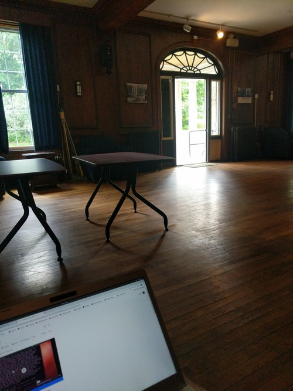
The routine was basically to work until people left, eat a dinner, and drive somewhere to sleep, perhaps after a little fishing. I didn't really want to sleep in the parking lot. So I would head to different places, mostly trail heads, and wasn't bothered. Much better to sleep around fields and trees anyway.
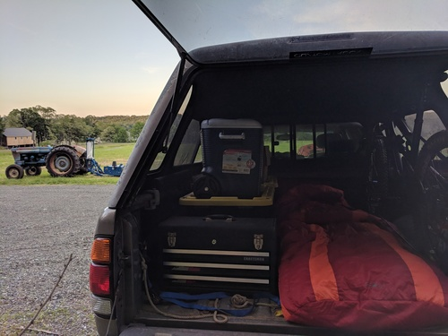
One such night I slept near Enfield, where I knew a fishing hole that a professor had shown some of us. I headed there before 7, and was able to pull out my first little trout of the summer.
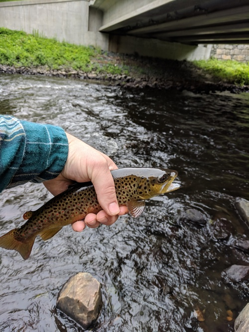
I headed back there the next day, and got another little guy. Will keep that spot in my back pocket for sure.
Eventually, I realized it was the start of sophomore summer. This was almost too much for me. I was surrounded by 20 year olds lugging around suitcases and traveling in massive packs to frat row at night. I briefly considered trying to find the rugby guys and join them, but I didn't want to be the weird old alum trying to get on table.
Instead, after the startup people cleared out of the house, I'd sit on the front porch reading and eating sunflower seeds. I got many curious looks as the lone remaining Alpha Delta, which was priceless. I could hear the kids whisper as they walked by, "Didn't they get kicked off campus?" None of these students had been in school while Alpha Delta had active brothers. But there I was, using a house that had essentially been boarded up as long as they'd known it.
While on campus, I had some professors I wanted to get advice from on my main project. Both of these guys are heavyweights in their fields, one in the C.S. department and another in the engineering school. The C.S. guy suggested I either go to grad school or volunteer my time at a lab so I could get academic experience. The engineering guy suggested I try to get into some government money set aside to fund ideas along the lines of what I was proposing. I guess I was kind of hoping they would know someone working on something similar, but I was happy to catch up and get their advice nonetheless.
I didn't really know what to do around that area, but I found a couple of promising posters in a window on Main St.
The first was for a show on campus, featuring Cory Henry and the Funk Apostles.
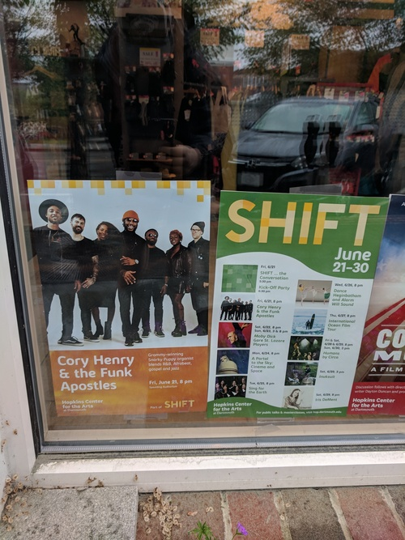
I hadn't heard of this group, but I quickly figured out Cory Henry used to play the Hammond for Snarky Puppy, so I was definitely in for that. The show was that Friday night in our performing arts center. I went to a reception beforehand for free food, and was disappointed there was no booze. I guess the students weren't 21 yet. As I went into the auditorium I was surprised to find almost all the patrons were elderly, and there were zero current students. I guess that wasn't the cool thing to do the first Friday of sophomore summer.
The show ended up being awesome. By far the highlight was a heavily jammed out cover of Stayin' Alive that had us jumping out of our seats and dancing in the aisles. I became a Cory Henry fan and picked up a record for sale even though my player is in storage far away. Been carting that thing around ever since.
The rest of that weekend was pretty boring, but I had found a second poster that caught my eye.
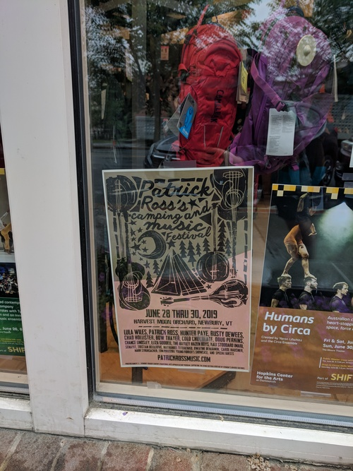
I'd never heard of Patrick Ross or any of the bands, but a music festival seemed like the right way to spend the last weekend before Phish came north. I had considered catching them in Camden, but that would have been expensive. This festival was $80 for three full days of camping and music.
I decided I was going, and that I would spend the next week bouncing around New Hampshire and Vermont mountain biking before heading to the festival.
On the Road
My first trip led me to the White Mountains. I really liked the drive out through there on the 112, and found some nice mountain biking in the national forest land near Conway. I got in a couple good rides and camped out there. I also met a local who was happy to show me around town. Conway is a classic, quaint little New England town.
From there I went west to Vermont. I took a different route, going up the 302 to the 3, and saw some great scenery there as well. My plan was to get to Burlington, Vermont for Grateful Dead night at Nectar's on Tuesday.
Burlington was my first real taste of humidity, and I was reminded of all the times my parents would praise San Diego's dry heat. I found a place to park the truck and got to Nectar's early.
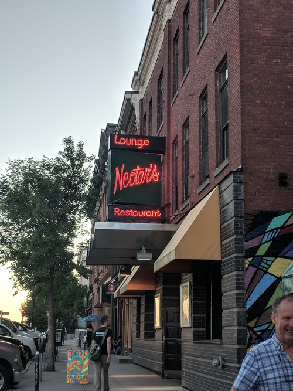
The place was pretty empty, but there was an older dude hanging around the pool tables with a lot of pins on his hat. I've found that in general, when alone in a new place, I gravitate to middle aged hippy dudes. We shot some pool, and got to know each other. Turns out he has been coming to this for years, and knew everyone there. That was cool, and I got to meet a lot of the Nectar's regulars. I can't recall the names of the guys who played, but it sounded like a bunch of Burlington locals who play in all sorts of different bands. I bought the drummer a beer afterward and he was very friendly, giving me tips about where to go for shows.
One of the other locals had mentioned a really cool sounding place that had a Grateful Dead night the next day, and it was right next to some mountain biking I wanted to do at Stowe, so I headed that way in the morning. I rode an awesome trail system called Cady Hill Forest that had a full blown flow trail going right down the gut. I wish I had a GoPro for that one, but I did get a pic of a trail sign that pumped me up.
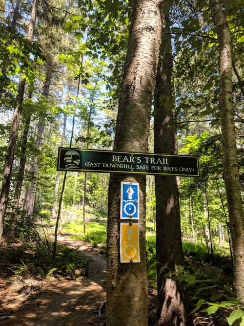
After riding in the absolute heat of the day, I found a river nearby to cool off in. I tried to get some work done, but I realized I would need to figure out shade or air conditioning, or else work in the mornings and evenings. I found a cafe and made some progress.
The venue that night was probably the coolest place I've seen on my travels thus far. It's called ZenBarn, but their logo emphasizes "bar". It's got a full restaurant, bar, and music venue on the first floor, and a yoga studio on the second floor. Out back there is a huge patio and fire pit.
Sticking to my habit of showing up early and befriending the middle aged hippy dudes, I sat down at the bar a few hours before showtime. This was technically in Waterbury, Vermont, the home of a Ben and Jerry's Factory and a stone's throw from The Alchemist brewery. I drank nothing but Heady Topper's, and they were super fresh. I wasn't totally sure if I was going to be driving somewhere to sleep, but I met the owner and he graciously offered to let me park in the lot out back overnight. All around the community feel there was awesome.
It turned out the act that night was Zach Nugent, a guitarist I had seen a few times in San Francisco the year before that I really liked. He really tries to channel Jerry's style and tone. It turns out he lives around there and this was kind of his home town spot. Because I was there so early, he was sitting right behind me at a high top eating dinner. I don't normally go up and be a fan boy, but I couldn't resist, since we were the only people there. He was super nice and appreciated that I'd seen him on both coasts.
Gradually, more people trickled in and it became show time. That same day, Zach had announced he was leaving Melvin Seals and JGB to pursue his own projects. When he announced that to the crowd at ZenBarn he said he would be around Wednesday nights all summer, which was met with wild cheers. That night he was doing an acoustic set with a mandolin player, Jerry and Dawg style. They played some classics, including Shady Grove, which got me really pumped up.
After the show, I hung out around the fire with the local dudes. One by one the got in their cars and headed out, and eventually I crawled into the back to sleep.
Festival!
Now it was time to head down for Patrick Ross' camping and music festival. I got there around noon, way too early, and was turned away. So I went down to the Connecticut River there, fished for a bit, and had a really productive couple hours of work on my main project.
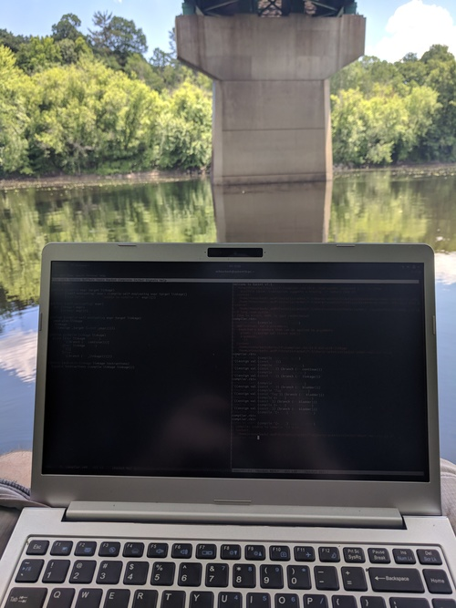
I knew I was going to be into music for the foreseeable future, so I was happy to get a good start on the next big phase of that project.
Once the festival grounds opened, I was the first camper in. I picked a spot in the "more noisy" campground, all the way in the corner. It ended up being a really family friendly affair, so even that camp was quite tame.
Not long after I showed up, I saw a guy using a car seat as his camp chair. This is a veteran festival move, so I went over to meet him. Turns out he hadn't even popped the seat out of his truck; that chair was on wood blocks and he kept it in the back at all times. He was a lifelong Toyota guy as well. We obviously became friends immediately.
Camping next to him was a middle aged hippy dude wearing a Grateful Dead shirt, his girlfriend, and her teenage son. The grown-ups started sharing drinks and that became the family for the weekend.
The music was good. There was one stage, showcasing back-to-back sets of local talent that all knew this Patrick Ross guy somehow. I didn't recognize him at first because I had seen him running around doing last minute set up stuff until the moment the first band went on. This guy, his wife, and their team work their asses off to make this festival happen, apparently for the third year now. Patrick is also a workhorse of a musician. I think he sat in on fiddle with every single act. Every once in a while, during a break in the music, he'd shout "Festivalllll!" and we were supposed to respond. That was how he gauged the crowd energy.
Friday's acts were good. Nothing in particular stood out, just a lot of good, peaceful, folk and bluegrass. The venue was on a beautiful orchard. I met the landowner, who was a very friendly guy. Some people don't like hammocks because they think they can damage bark, so I asked him if he minded. His reply was a hearty laugh followed by "I'm going to cut them all down some day." I spent the afternoon and evening swinging in the trees sipping Heady Topper.
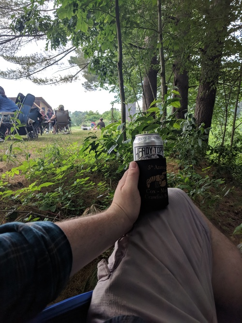
There was a late night set as well, which was right in the campground I'd chosen. I guess that's why it was the "more noisy" one. The scene was not as raucous as some of the late night festival sets I've seen, but it was fun nonetheless. Hunter Paye, who I'd never heard of, killed it with his looping pedals, delivering covers, mash ups, and originals.
Saturday began with a youth showcase of the people Patrick taught lessons to. This is always cool to see. None of the kids were nervous at all, and some of them were really talented. The rest of the day proceeded much like Friday. There was no outside alcohol allowed in, so we would watch a set, then head to the campground to be near our coolers until the music started again.
There was one standout act that night: Chad Hollister and his band. The second to last band to play, they took the stage right around sunset. I think they are normally more of a rock band, but this was a full-blown bluegrass setup. They played well throughout, but for a few glorious minutes they teased and sang the lyrics to YEM and Fluffhead, two classic Phish songs. This had me on my feet in my hammock dancing around. Frankly, I had hoped for more Phish teases from a Vermont music festival, with the band playing less than 50 miles away in two days.
The skies opened up for a thunderstorm right as the headliner, Lula Wiles, was beginning to play. I tried to stick it out for a bit, but slowly the crowd dissolved and ran for shelter. I don't think they played a whole set, and the late night set definitely didn't happen.
The following morning there was one last set, and then it was time to part ways. I said goodbye to the new friends, and was the last one out of camp.
At this point, it was Sunday afternoon, and I wanted to get to the campground I'd be staying at for Phish early Monday, so I drove into the Green Mountain National Forest to find a place to camp. After wandering many back roads and not seeing any designated campgrounds or ranger stations, I tried to head up a forest road or something to where I knew I'd be OK to park. But everywhere I went I seemed to be on private property, so eventually I holed up at an RV park for $20. This was actually really nice, because I could do dishes and shower between two runs of lots of music and camping.
I did some reading and went to bed early, excited to be re-joining Phish Tour.
Phish Tour
SPAC
After having caught Phish on opening night of tour, I had excitedly followed while my phriends caught them in Charlotte, MPP, and Camden. Lots of good shows had been played since I saw them, and the general consensus seemed to be that they were just getting better and better. They had seemed on point to me at the first show, and now I was excited to be following the home stretch of tour.
The plan was to link up with one of the buddies I made last year. We were seeing two shows at SPAC on July 2 and 3. He was coming with some of his friends, and the plan was for me to get a campsite the first, and they'd join the next day.
Both the older guy at Nectar's and my buddy's friend told me to camp at Lee's in Saratoga. This is a full time RV park, but they have a huge camping area and are the go-to spot for camping around shows at SPAC. I arrived around noon the day before the show, but they were already set up with wristbands and staff directing traffic. Apparently there was a concert that night. Lil' Wayne and Blink 182. The teenagers and college kids there for that stood out like a sore thumb against the phans setting up camp.
Getting there so early, I didn't really have a good idea where to park. There were maybe a dozen camps when I drove in. One person had suggested "by the corn", but none of the staff knew what that meant. I found a decent area in the shade adjacent to a spot I could park my truck, and called that home. I wish I'd taken a photo, we ended up carving out a pretty badass campsite by using my hammock and some re-purposed caution tape to make a boundary.
Getting there that early was also a blessing because it gave me a chance to meet some cool people setting up.
For example, I met a friendly vendor setting up his tent who had come straight from a festival in Tennessee. He ended up having the biggest and baddest shop on the little shakedown area by nightfall. I traded him my spare tickets for some goods.
Later on, I met some guys who looked to be setting up by the campground's stage. Yep, this campground had a stage. They turned out to be the drummer and guitarist from Orange Velour, a local band who would be playing that night. They gave me a sticker, the first local band sticker I added to my truck. I asked them what kind of music to expect, hoping to finally get a phishy jam band. They smiled and the guitarist said, "Some songs you'll recognize, some you wont."
I spent the afternoon fishing, because apparently the lake right there was a decent bass lake. I tried dragging a texas rig through the weeds all along the shoreline, but didn't have any luck. I saw one guy pull a fish out of the same weeds around sunset, but that was the only action I witnessed. It was still a really nice, peaceful way to spend the afternoon.
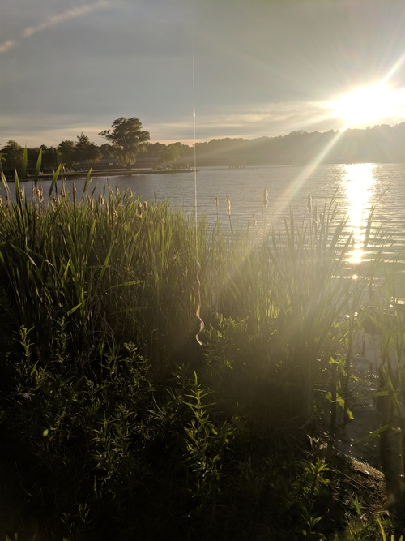
As it grew dark, I headed back to camp, got to know some neighbors who had shown up, and ate dinner. Around 9, the band fired up with Tweezer Reprise. In retrospect, this was an obvious call and a bit of an inside joke. Every time Phish plays the song Tweezer, they play Tweezer Reprise later, like parentheses. However, the last show had seen a Tweezer with no reprise. The parenthesis was open, and at any point Phish could close it. Orange Velour knew this tension was in the air, and they were definitely going to play to the crowd.
I hung out in the hammock listening from afar and talking with the neighbors, until they cut into Scarlet Begonias. This is probably my single favorite song, if you made me pick, and I had to jump out of the hammock. I tried to persuade the guys around me to come check out this band, and one of them ultimately did.
While we were walking over, they struck up Sneakin' Sally Through the Alley. This is an important song, so I need to make a little digression about how my phriends and I behave at Phish shows. There are certain songs that, when played, merit the removal of your shirt. Sneakin' Sally is one of them. We waited all summer to hear it last year, and the joy we felt when it came on at the penultimate summer show was tough to beat. Since then, it's been one of my most listened-to tunes. I turned on the local radio somewhere in Vermont the day before, and it was playing, and I was driving shirtless.
So when Orange Velour played it at Lee's, I solemnly looked to my camping neighbor and told him, "Mark my words, I will never wear a shirt while this song is played." I popped my tarp off right there in the middle of the campground, and my brisk trot turned into a full blown gallop. The stage was small, and there couldn't have been more than 20 people there, so when the band saw this guy they'd met earlier come running up shirtless and grinning, they all broke out laughing.
Despite the size of the setup, this was a full blown jam band show with smoke machines and psychedelic lights and everything. I haven't been to a show that was so intense and so intimate. By the end I was about 5 feet in front of the stage, eyes locked with the lead guitarist. I truly felt like the band and audience were trading energy.
They played Sneakin' Sally for so long I thought they'd transitioned into another song and put my shirt back on. Little did I know, they were just playing a monster 20 minute Sally jam, so when they came back to the chorus to finish, I looked at my buddy, shouted "Mark my words!", and popped it back off. The band cracked up again.
After that, they played an enormous Crosseyed and Painless, another favorite Phish cover. I was very happy. As that jam wound down, my buddy departed, but I had to stay. Next they played a brand new "festival song" as they called it, about a man who could turn water into Natty Ice. It was a silly, fun song, and it ended up being their last. Apparently the campground wanted quiet after 1am.
I was too jazzed to sleep right away, so I made my way to a pond with my fishing rod. In pitch darkness, the little pond was illuminated by hundreds of fireflies, dancing to the croaking of dozens of bullfrogs. It's one of the more beautiful times I've spent fishing. I didn't get anything, but I did get one hit before he spit it back at me.
Finally I slept for the night, awaiting my friends.
In the morning, there had been some hiccups with their train schedule. Apparently the train came an hour early. That sounded like user error to me. Turns out there was a memo, but the ticket holder missed it because it was sent during Bonaroo. Who would send important emails at a time like that?
I fished out front, waiting. Eventually, they rolled up in a rental, and I walked them in to our spot. I had met this buddy in Denver, and it was good to see him again after weeks on the road. He came with four new phriends I had never met, and we started to get to know each other. This is one of the things I've appreciated most about following Phish: the phans tend to be weird, nerdy, and like to have fun. Both last year and this year, camping out and meeting people has led to immediate bonds.
We hung around the camp, and they got set up. There wasn't a ton of time before we had to make our way to the venue so we basically just sat around and shot the shit drinking beer, excited to see Phish.
The campground arranges shuttles for a fee, which we took over to SPAC. The walk in to the venue is really cool. It's in the middle of a sprawling state park, and the venue itself is sweet. There's a solid pit, intimate pavilions, and a gradually sloping lawn. The best lawn seats are about the same as the worst pav seats, and there isn't really a bad seat in the house. Great sound too. All-in-all, I can see why this is a legendary spot.
I'm not in the business of reviewing Phish shows, but this was a classic. They opened with Cathy's Clown, which they'd never played before. As Trey explained, this was because Mike was wearing outrageous pants with clown fish on them. Classic silly Phish. Next, they closed the open parenthesis. Tweezer Reprise is always a rager, and this set the tone for the rest of the night. Later in the first set, they played a very good Bathtub Gin, the second good Gin I saw this tour.
Our group was split up between lawn and pav seats, but we all got together in the second set. Everyone got something they were looking for. For me it was the Fee encore, confirming everything that had been stuck in my head for weeks. At one point Trey flubbed the lyrics, at another he couldn't get his bullhorn to work. Hearing him swear at it over his mic brought wild laughter and applause from the crowd.
Content, everyone headed back to the bus. As we were walking across the grassy field, we realized that walking barefoot on grass is like flossing for your feet.
Once we got back, we tried to work up the energy to wander the campground, but I was too tired and zonked out in my hammock.
The next day we got a lazy start and made our way to the lake to swim and hang out. The scene there was great. Everyone having a good time. There was a belly flop contest, which I abstained from. Last time I did one of those I think I concussed myself.
Refreshed, we headed back to camp. I had big plans for that day. Earlier in the week, I had asked my buddy if he had any grocery requests, to which he replied only, "Fluffhead." This was actually something I could supply. I picked up a bag of Wonder bread and a jar of marshmallow fluff. At our campsite, I produced them, and explained that if we finished the fluff, Phish was guaranteed to play Fluffhead.
We started out just eating fluffernutters, but we weren't making enough progress. We also had Tostitos and queso, so we started making Tostitos with queso and fluff. It's actually much better than you'd think, except we agreed the Hint of Lime was a bad look with the fluff. Next we went to everyone's favorite potato chip, the S&V. I'm sad to report that S&V and fluff did not work out. I kinda figured that was a match made in heaven.
Anyway, one thing lead to another, and we were really getting down to the bottom of it. We set off for the venue with the fluff jar in tow, and a wooden spork to finish it with on the bus. I had a pretty amusing conversation with the security guard about why I had to bring it in. She got her manager involved, and he agreed we could bring it as long we didn't throw it. I thanked security, reminding them that Phish was now guaranteed to play Fluffhead because of their help.
This night, we were all together on the lawn. The buddy that I had known prior to this decided to head off to the bathroom right as the band was getting ready. Low and behold, they struck up the distinctive opening notes of Fluffhead. I couldn't believe my ears, but when I looked to my new friends the looks on their faces confirmed it: Phish was opening a show with Fluffhead for the first time since 2010.
Before you could say fuddled, my shirt was off. I looked back into the crowd for my buddy, and saw him barreling through the lawn tearing off his own shirt. The magic had worked, and we basked in the glory of our accomplishment. We took turns passing around the empty fluff jar, pumping it into the air triumphantly. This was probably the happiest moment of tour for me.
The rest of the first set was awesome, and at set break we finally had a chance to talk about the insanity of a Fluffhead opener. Surely they were going to play it after we ate all that fluff, but really in the opening slot?
The second set got underway with some nice jams. Nothing too extended, but fun. One of them bled into what sounded like the chords of Tweezer Reprise, and sure enough the rest of the band picked it up and treated us to a proper Tweezer Suprise. The night before was closing a recently opened parenthesis, but what the hell was this about? I still haven't done the analysis, but I promise I will find out which Tweezer that closed.
This had our shirts off, and after cooling down with The Wedge, the band struck up Sneakin' Sally. Shirts already removed, we had nothing to do but jump around and hug each other for joy. Three tarp poppers in one show. The second set finished strong from there, and we were all very happy with the SPAC run.
Back at camp, I was once again too tired to do anything but sleep.
Fenway
The next day, the 4th of July, we were heading to Boston. Phish was playing Fenway on the 5th and 6th, but today was about celebrating America. One of the phriends had left the previous day. Another had left in the middle of the night to catch a flight back for the 4th. I drove the other three down.
We had an Airbnb in Southie for the weekend, and our phriends started trickling in. This was the full extended phriend group that I had started to meet last year. One of the SPAC folks lived in Southie, so once everyone arrived, we made our way to that place for a good old fashioned cookout.
Later on, as we made our way back to the rental, we stayed up late partying and generally re-uniting. Some of this group hadn't seen each other in a year.
The next day, excited to see Phish, we did a little pre-gaming but headed towards the ballpark in the early afternoon. The showtime was fairly early due to a curfew, and there was some concern about crowds getting into the stadium. We took over a section of Cask 'n Flagon and did our pre-gaming there. After being in the wilderness surrounded by phans, it was kind of eerie doing it in a major metropolis. Especially for a guy who'd been camping in the back of his truck for weeks.
We all had a good time and made our way into the stadium. This was my first time at Fenway, and I was glad to be seeing something I loved instead of getting brought in by my Bostonian friends to see the Sox.
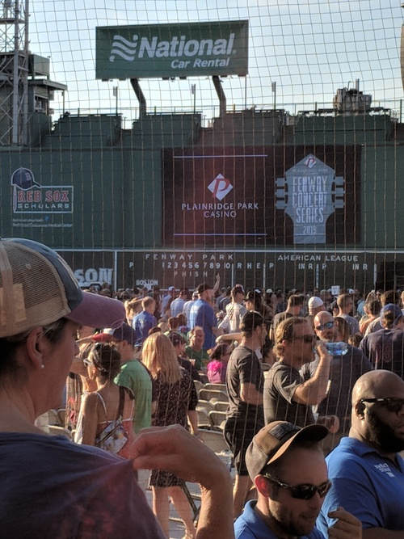
The setup and energy there were great. I didn't even sit in my assigned seat and had no issues. They only really checked if you wanted to go on the field. We scored a nice box just above the field, right in front of some speakers.
As the sun was getting low, the band started. This show played out much like the SPAC run: lots of good playing, no monster jams. I was pumped we caught a song they debuted last year, Say It To Me S.A.N.T.O.S., which became an instant classic. The energy in that song was even better than I had expected live.
Thoroughly pleased, the gang somehow reunited out front in packs of 3-4. Once we were all together, we spent some time on the streets wandering around before heading back to the place.
With far too much energy to sleep yet, some of us made our way down to the playground our rental's balcony overlooked. As it turns out, the basketball court there was the very one where the big fight scene in Good Will Hunting went down. We sat around, did the rope course, played with the water jets, and generally acted like kids. After a while we convinced the people on the porch to drop down supplies so we could keep the fun going.
Finally, we slept.
The next day we went out for a big group brunch. It was a big old warehouse, and if they had air conditioning, it was fighting a losing battle. Hungover but in it together, we got some food and drinks down our necks.
We headed back to the rental for a short time, but once again left for the ballpark early. The weather was bad–we could see lightning striking–so there was a lot of concern if they would even be able to play. Apparently they could start 30 minutes after the last strike, but there would also be time to set up.
Optimistic, we left the bar to get in line anyway. Once inside, it was an absolute cluster fuck until they let people into the stadium. We read online that because of the delay, they were going to play around 8:30, with no set break. This unique format was exciting. How were they going to handle such a set?
Eventually the floodgates opened and the press slowly squeezed us through to the stands. I was with a group that found our way back to the exact same box as the night before. As the rain was finally letting up, Phish took the stage.
They opened with Carini, a heater in any slot. As it turned out, we were in store for a monster 149 minute set packed with nothing but bangers. It was a lot of fun, especially after all the tension that had built up wondering if they were even going to play. I don't know how they still have the energy to pull that off; people in the crowd were having to take breaks from dancing.
There were multiple shirts off moments. One particular highlight was getting Mexican Cousin, which some of the vets in the group had been chasing for nearly a decade. This bled into 2001, the original tarp popper, and the song which, at my first show, cemented my love for Phish. Lots of hugging and happiness.
With the Boston run under our belts, we headed back to the apartment, not wanting the weekend to be over. We stayed up into the wee hours, listened to the entire show we'd just heard in its entirety, and removed our shirts as necessary. We were even lucky enough for two of the gang to do a light show for us on the switches. One-by-one people threw in the towel. Finally, I found my customary spot on the floor to sleep.
The next day we cleared out the Airbnb in a hurry. We discovered around 10:45 that checkout was 11. Some people parted ways right then, others stuck around for the afternoon, and a few spent the night.
Those staying for a bit headed to a brunch spot to watch the women win the World Cup. Then we returned to our phriend's place who lives in Southie for an easygoing afternoon on the porch. I decided to stick around that night because there were still folks who wanted to do sightseeing the next day, so we got some grub and grilled a dinner. I crashed at a buddy's place nearby.
The next day I went with three phriends to see the sights. One of them was dead set on seeing the Paul Revere house, and I offered to drive the gang over. Little did I know this would take us right through one of the more tangled messes of Boston traffic. I swear I drove through the same tunnel three times. We kept getting turned around because we would go through a tunnel, and the GPS would be mis-calibrated when we came out, so it would direct us to make a U-turn at the next available opportunity.
Eventually we found the spot, parked, and had a nice afternoon as tourists. We saw the house Paul Revere lived in as well as the church where they hung the lanterns. There were lots of old Italian spots around there, and we got a good deal on a nice meal.
I brought two of the gang to the airport, then swung the last phriend out to a spot on the coast.
Mohegan Sun
At this point, my plans for tour were over. However, one of the new phriends from SPAC, who had left for the 4th but returned for the Fenway shows, was interested in catching the last two east coast shows down in Connecticut, at the Mohegan Sun casino. Also recently unemployed and in the area for the week, it seemed like the right call. I didn't take much convincing.
It was Monday, and the shows were Tuesday and Wednesday. After dropping off the last phriend in Boston, I turned north to meet up at the family lake house in New Hampshire. Seems like everyone I know on the east coast has a family lake house in New Hampshire and/or a place on The Cape.
After spending so much time in society, this was a welcome break. We drank beer, sat on the dock, and I fished. Not much luck with worms, just a couple little sunfish, but I saw something feeding a little ways down the shore, so I brought out the topwater. Two casts and I had him on land, but he wasn't much to write home about either.
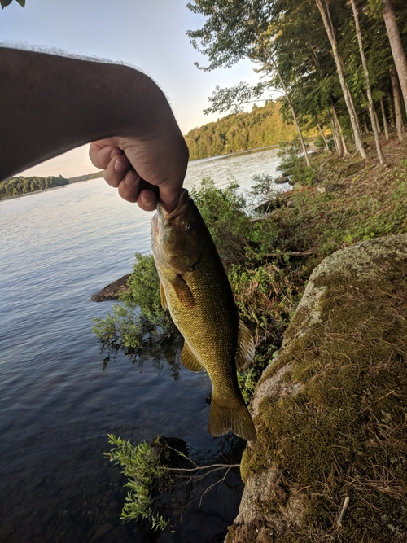
As the sun set, we went in, scrounged up some dinner, and watched Fare Thee Well DVDs before bed.
In the morning, we quickly buttoned up the house and made for Mohegan Sun. We caravaned to my phriend's family house in Massachusetts, and then I drove us down the rest of way. I put on a show from 10/25/13–my second show and still one of the best I've seen to this day–because it was in Worcester, and we were driving right through. We even saw a sign for the venue, the DCU Center.
On the way down we booked a cheap motel, and started looking for tickets. We weren't having a ton of luck. Once we got to the hotel, we got some food, got ready, and had some drinks. I had thought about trying to earn some money on the craps table to fund the ticket, but without any steady income at the moment, I soured on the idea of gambling. After polishing off our drinks, we caught a ride to the casino.
Mohegan Sun is a big glass thing out in the middle of the Connecticut forest. It looks pretty ridiculous compared to the casinos I've seen, which are usually in the desert. Once inside, the smell confirmed it was in fact a real true casino. However, this is like a lite casino compared to Vegas. There are weird rules, like no booze after midnight or so.
We ended up springing for seats on StubHub, but for what we paid, we got really good seats. Like Fenway, we were just above the floor, maybe a third of the way back. Unlike Fenway, this was small, totally sold out, and everyone was in their assigned seats.
It's a basketball arena inside the casino, maybe 10,000 seats. Not very different from Chaifetz. However, the energy was palpable in a way I don't think I've ever experienced. Part of it was the end of the east coast leg of tour, part of it was the indoor venue, and part of it was that Phish had never played there. Certainly, many die-hard phans had circled these shows on their calendar.
Seeming to sense the same vibes, the band opened up with Energy, a nearly six year bust out that was last played the night after my first show. Trey spent a few seconds over with Mike and looked up to say, "I just taught him this song, so we'll see how it goes." After Energy, the band smoothly segued into Weekapaug Groove, a song that is almost always the closing parenthesis after a Mike's Song. But, rules are meant to be broken. Apparently, we were right near the actual town of Weekapaug, so it made sense.
This set the tone for the whole show. Lots of energy, lots of great transitions. The Maze was especially high energy, and I swear if you saw the webcast there was a crowd shot of us rocking out. I watched the cameraman zoom in on us over Page's shoulder. Later in the first set I got a rocking Sample, which I hadn't heard since my first show. To end the set, we got a deep Bathtub Gin, the third of the tour for me, and somehow hotter and funkier than the other two. That pretty much sums up this tour–it just seemed to get better and better.
In the second set there was a lot of good jamming and beautiful segues. I swear the segue into Undermind started off as a tease, but the crowd roared so loudly they had to play it. Beneath the Sea of Stars Part 1 was slow at times, but right as I was nodding off it would build into something nice, before dissolving again. The rest of the set was excellent, well played, and lots of fun. Ghost had an awesome Under Pressure tease, followed by a full blown Weekapaug Groove tease that you could have called a reprise.
To start the encore, Trey asked the crowd, "You guy's in a rush to get out of here?", to which we replied a resounding "NO!" At this point, with the high energy indoor venue and banter from Trey, I got my hopes up for the kind of wild encores you hear about where they spell something or play Gamehenge or whatever. We ended up getting the first ever Foam encore, followed by Contact and More. Not a bad way to end a really fun show.
We tried to get a ride back to our motel, realizing to our dismay that Uber and Lyft were both more expensive the the price of our budget room. Without much recourse, we waited to see if the prices would drop, and they didn't. Frustrated, we headed back, and pretty immediately conked out.
The next day we really didn't get up to much. We slept in, and re-listened to last night's show. Mike was doing this thing where he would hide free tickets somewhere before each show, and post hints on his Instagram. Our main activity of the day was to refresh his story, as we could really have used that miracle.
Right as we refreshed and saw he had posted them, I got a text from one of the Phenway gang saying as much. Good lookin out. The post showed a couple of cross streets and a fire hydrant with the tickets. We found to our intense delight that those cross streets were five minutes away. We instantly hopped into the truck and hit the road. I went as fast as I could without risking getting pulled over. Once off the freeway, we made the turn into the neighborhood only to discover on Instagram the tickets had been claimed moments ago. They must have been refreshing every minute, because we were the closest you could possibly have stayed unless you live in that neighborhood.
Undeterred yet unprovoked, we headed to the spot anyway. We saw another car in front of us, clearly slowing at each fire hydrant. We got out to chat, as more phans slowly trickled into the cul-de-sac. The car that was immediately in front of us was a dude who claimed to be the head of Mike's fan group. He bragged that he had tickets anyway, but it was "Fun to play the game." I didn't like that guy. Later that night I saw him posted up right in front of Mike on the rail, deep headbanging the whole time. My phriend and I both touched the tape Mike had touched and got a pic with it.
As we left, we agreed that Mike's aura was still hovering in the area. My phriend suggested he was probably hiding in a bush nearby watching it all play out, which sounded exactly right to me.
We got some food and booze, and prepared for the last night of our tour. It turned out to be much harder to get good seats, so those golden tickets really would have been nice. We ended up in the nosebleeds behind the stage, which I was actually excited for. I've never done behind the stage seats for Phish, but I've enjoyed it at other shows.
The phriend who lives in Southie was going to be there, and was bringing a roommate to their first show. We saw them in line, but the press was tight, and we were late, so we didn't link up till set break. The show was starting as we finally got inside, and we literally sprinted down the concourse and up to our nosebleeds.
The lights were the star of this show for us. It was a lot of fun seeing the light show from the band's perspective. I've usually been on the floor, so seeing the patterns play out from above on the crowd was wild. As just one example, during Piper, CK5 made the lights into squirming red worms crawling up the crowd.
Aside from the epic light experience, this was a gnarly show. It started with Buried Alive, which we mostly missed, but as we ran up to our seats they were cutting into Cavern. It didn't stay dark and heavy all the way through, but this was a preview of what was to come. The rocking first set culminated in David Bowie, which was a special treat of a light show.
At set break, we caught up with our phriends briefly, and went to get drinks. Not booze, just water. They had water fountains there and we figured out you could get a huge cup of ice for free and fill it up at the fountain again and again. Re-hydrated, we found our seats.
The second set opened up with Party Time and the tone was set. After that, the whole second set was played with a plodding, methodical tempo. Even Chalk Dust Torture was played slower than normal, but we agreed this was fine by us. The meat of the set was a giant Ruby Waves sandwich with Seven Below, Stealing Time, and Piper for filling. It felt like as soon as the jams were getting going, they'd ripcord into a new song. I guess this was a warm up for the epic Ruby Waves they would play in Alpine Valley later in the week.
They ended with Drift While You're Sleeping, a set closer I'd first seen at the tour opener in St. Louis. This one has really grown on me, as far as the emotional Ghosts of the Forest songs go.
After a positive end to the second set, we were seemingly in store for a similar vibe in the encore, when they opened up with Bouncing Around the Room. However, they returned to the gnarly, dark theme from the beginning of the first set with Saw It Again. This is one of the heavier Phish songs and I hadn't heard it in a while. I forgot how truly terrifying it is. For most of the song, the lights showered the arena in a menacing dark red.
Then it got even weirder. At the time, I had no idea what was going on, but they did Kung over the chorus of Saw It Again. Kung is basically a chant, so they were chanting and screaming and generally scaring the shit out of me. I described that as, "Experts only, double black diamond." I have no idea what must have been going through the mind of our first timer phriend.
After nearly 7 minutes of terror, they ended the encore with Slave to the Traffic Light, bringing us back to a happy, familiar place. Thanks Phish, I don't think I could have slept if that Saw It Again/Kung was how my tour ended.
After this show we wasted no time getting the heck out of there. We made a beeline for the front. Remembering what had happened the night before, we had scheduled an Uber pick up. Much to our dismay, Uber prices then were just as cheap as the scheduled one had been. Win some lose some. We sat in the casino lobby laughing and shooting the shit until the car arrived.
Once back at the motel, we weren't ready to sleep, because that would mean tour was over. We stayed up for a while kicking it before finally passing out.
The next day, I ran my phriend back up to Massachusetts, we said our goodbyes, and parted ways.
Heading West
Boston Reprise
At this point, I found myself once again alone and without plans. I decided to head to Boston to see a friend I had missed before reunions and over the Phenway weekend. He lives in the Back Bay, so I parked over there and "worked" for a while in the Boston Public Library. I say "worked" because I hadn't looked at my computer in two weeks, and it was really hard to get back into the swing of things. I basically just stared at some code I'd written for a couple hours till my buddy got off work.
He took me to a nice Indian place, which pumped me up. I hadn't had any Indian since I left San Francisco, and I love a good curry. After that I got a free Slurpee because it was July 11, and headed to the Esplanade to walk around. There was a pop-up beer garden going on, so we stopped in there for a drink.
Then we continued on, taking a lap through Beacon Hill. I got to see the Beacon Hill pub, where it was often claimed you were bound to find someone you knew from Dartmouth. I guess we are too far out of school now, because we didn't see anyone. We continued on, back to his place.
We went up on his roof, which had awesome views across the river, as well as over the Back Bay. He explained how much of what we were looking at was landfill, and I explained the terrors of liquefaction. I really liked being in this historic part of town after spending most of my time in Southie. My friend was a good guide and knew a lot of the history.
My plan the next day was to head down to New York for the weekend to visit with both college buddies and one of my phriends. Oddly enough, my host was heading to New York as well. But he was working most of the day, and since he already had a ride lined up, we agreed it would make sense for me to leave early and beat the rush.
His brother had been nice enough to sleep somewhere else, so I hopped into his bed and passed out.
New York
The drive from Boston to New York was mostly uneventful, although the traffic was brutal. The friend I'd just stayed with in Boston described it as getting linearly worse the closer you get to New York. We agreed the problem was in Boston everyone was driving fast and mad, but they were at least coordinating. In New York, it was complete anarchy. Herky jerky little fits and starts of aggression that don't get you there any faster and actually just gum up the works for everyone.
Eventually I made it into Queens and down into Brooklyn where I was to stay. As I drove through South Williamsburg I thought, "Wow, I'm definitely in New York." I found a good spot in Williamsburg right by my friend's house, and did a little work in a coffee shop until he got off work.
There was one other Dartmouth guy visiting that weekend, who had been on a month long world tour after finishing grad school. We caught up on our friend's rooftop and traded stories about being on the road. We grilled out with the roommates for dinner, then headed to Manhattan for drinks with some of our other rugby friends who lived around there.
We had a good time catching up with those guys, some of whom were a year older than me and I hadn't seen since college. We bar hopped, drank beers, and told old stories. We ended up staying out really late, since the bars close at a properly late time there. As the sun was coming up, we returned to Brooklyn.
The next day, our host was going to the Yankees game with his family. I spent a little time in Williamsburg before heading out to Prospect Park to meet my other phriend. The park scene in New York was about what I'd expect after living for five years in San Francisco: lawn games, lounging, and light beers.
That evening, my phone was dying, so I parted ways with my phriend and met up with my buddy from Boston, who happened to be in the area. We were to get dinner with the rest of our crew.
As it got dark, we decided to check out the bike rentals and peddle back to Williamsburg. This ended up being a great call, since we got to not only see a good chunk of Brooklyn, but smell and taste it. The bike lanes are often on the left there, which weirded me out, but if you stick to the main routes, they are very well marked. Sometimes they even have a little barrier to keep cars out.
Eventually, we got back to the spot in Williamsburg, parked the bikes, and went to get dinner. We ended up going to an asian fusion place right across the street that was unassuming and very good. Walking around, I noticed some funky music coming from a place nearby and went to check it out. Looked to be a Cuban band, but they were taking a break. The place was called Kill Devil's which I thought was cool, since there's a Phish song called Kill Devil Falls. Strangely enough, there was a place right down the block called Birds of a Feather, the name of another Phish song. My buddy is living on a heady block.
The plan for that night was to go to a "party" in Brooklyn. I don't know why they insist on calling it that, because it's really just a DJ set at a small venue with a bar and a stage for dancers. This wasn't really my scene, and the DJ they wanted to see didn't even go on till 1am, but I figured this was a pretty classic look at how my friends live in Brooklyn, so I went along for it. Ended up having a pretty damn good time. I was very glad I brought my ear plugs.
After a couple late nights, we took it really easy the next day, just lounging at the park. We got pizza for dinner, and headed back to the apartment. The buddy who had been traveling wanted to go see his sister, and then go out one last time in Manhattan, where he had used to live. So that's what we did. His sister had just moved into a sweet place in Long Island City with epic Manhattan views.
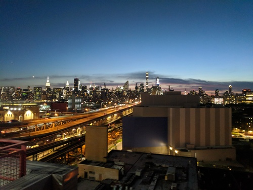
After parting ways with her and her boyfriend, we took the train to the West Village and found ourselves at the Village Tavern. My buddy said this was a big football spot, which I could totally see. However, it was 11pm on a Sunday night, and we basically had the place to ourselves. We watched an epic Red Sox game in extra innings and played both Big Buck Hunter and Golden Tee. Satisfied, we headed out around 2am, happy to be going to bed so early.
The next morning, we parted ways and he headed to catch a flight back to L.A., his travels done. I moved my truck to the other phriends house in Brooklyn. My plan for the day was to go work in the New York Public Library, and get some Halal street food in Manhattan.
I met with a friend who went to school right there, and we walked up 5th Avenue to the original Halal Guys cart. I'd actually had them in San Francisco, but being at the source, on the streets of Manhattan, felt right. After lunch, we walked back and I went into the library to work. By now, I was at least mildly productive.
I had made plans with a couple other friends to meet up in SoHo for dinner, so I took a train down there a little early and walked around for a bit. Lots of little shops and stuff, but not really my scene. We met at this little Mexican spot in an old garage, which had good drinks and tacos. We were joined shortly by one other friend, and had a good time catching up. I hadn't seen enough of either of these two at reunions. I basically told them the same stories contained in this post. I even mentioned I needed to write this post. Weird.
Afterwards, I headed back to Brooklyn with one of the friends and retired to my buddy's place. We watched the second episode of some anime he was getting into and passed out.
The next day, I took my truck in for an oil change. This is when I realized that Brooklyn was a full blown city, not just an area of New York City. There were multiple Toyota shops, and once I got out there, strip malls and the kind of stuff you'd see in any California city. I worked in a little library by the truck dealer, and had my first big breakthrough since before the bluegrass show and Phish tour. Satisfied with my day's work, I headed back to Brooklyn to my phriends place.
By now it was Tuesday, and the Phish tour had concluded in Alpine Valley, Wisconsin over the weekend. The Sunday show was an absolutely insane exclamation point. I had not listened to any of it, but I knew from the set list it was a rare show. We decided to couch tour it, and were pleased to find the buddy who's LivePhish account we all log in to had already purchased it. So there we were in Brooklyn, watching a high definition video of the best show Phish has played since I started following them.
The first set felt like it was from the '90s, and the second set contained the longest jam of the era, the 38 minute Ruby Waves they were warming up for at the second Mohegan Sun show. The next day we were going to see Between Me and My Mind, the documentary about the Trey. It felt like Phish tour still wasn't quite over. We got some rest, and agreed that I'd meet him on Governor's Island when he got off work.
I slept in and waited for a call that my truck was ready to pick up. Before too long that came, and I scooped it out. They were trying to tell me I needed thousands of dollars of work done, and I assured them it just needed fresh oil. It definitely does need new break rotors, but they wanted to sell me $900 worth of crap in addition, so I bailed on that.
After getting the truck back to a good spot in Brooklyn, I headed over to Manhattan. I had some time to kill before the Governor's Island ferry, so I walked around Wall Street. I don't particularly like Wall Street. But it was still fun to look at the New York Stock Exchange, and mildly amusing to look at the great big bull in today's economy.
I got some street tacos and climbed onto the ferry. I didn't realize how close it was; it was only about a 10 minute ride.
Once I got off my buddy picked me up in a side by side. He works as a gardener on the island, so he was in a great position to show me around. We walked through the areas he's responsible for, and he explained the invasive species he was battling and how they'd come to be there. Later, we got a drink while we waited for our ferry.
Back in Manhattan, we decided to head towards the theater where we were watching the documentary. There was a whole food court below it, so he got some food and we had some beers. With a little more time to kill, we went over to Junior's, where we got some excellent cocktails from a very chatty bartender. We paid the tab and headed into the theater.
This was an Alamo Drafthouse, which I'd actually been to once before in San Francisco. A really cool set up with comfy chairs, food, booze, the whole nine yards. We each ordered a drink for the show and kicked back.
I'm even less of a film critic than a concert critic, but I will say, that movie was exactly what I had hoped for. Some parts were raw and awkward, some parts were tragic and brutal, and some parts were inspirational and joyous. We left the theater happy, and made our way back to his apartment.
Thoroughly satisfied with how we had spent the last two nights, we sat out on the balcony in a thunderstorm. Every time we said something about Phish there would be a thunderclap, and we'd chuckle and say, "Thor agrees."
Chicago
The next morning, I got up when my friend did for work, around 6. I was finally heading west. I wanted to go see a phriend in Chicago, the one who had done the whole run of shows from SPAC through Mohegan Sun. It was my first long day on the road in a while, so I wanted to make a good start.
It ended up being a relatively smooth ride. I was leaving early enough that I was able to pilot Fee through Manhattan without issue, something I kind of wanted to do but also mainly wanted to avoid. I hit intense rain once I crossed into Jersey, but that cleared before long. The only other issue was in Ohio, where I drove straight through a thunderstorm that had apparently smashed Chicago earlier. Clear of that, it was smooth sailing.
One issue I did take with the drive was the toll roads. Damn near bled the sock I keep full of dollar bills dry. There was a toll before the big bridge into Chicago and after. What the hell?
Anyway, I parked and settled in. This was actually my unemployed phriend's last big weekend in Chicago before moving out, so I had come at a pretty bad time. We managed to hang out for a bit that night, but in the morning I was on my way.
Nashville
For the second day in a row, I started heading towards a phriend, and only let them know once I was en route. This time I was heading south to Nashville, somewhere that multiple people on my journey had suggested I should check out.
When I met this phriend in Boston, we had agreed I should come visit. Once again, without checking the timing in advance, I managed to get a little time to hang out. She was heading to the Bay Area for 10 days, but I got in early enough to spend some time doing Nashville things before the flight.
We went down to the 12 South area, which reminded me a lot of Union Street in San Francisco. There, we got Edley's barbecue, the first real barbecue I'd had since I was in Austin over a year ago.
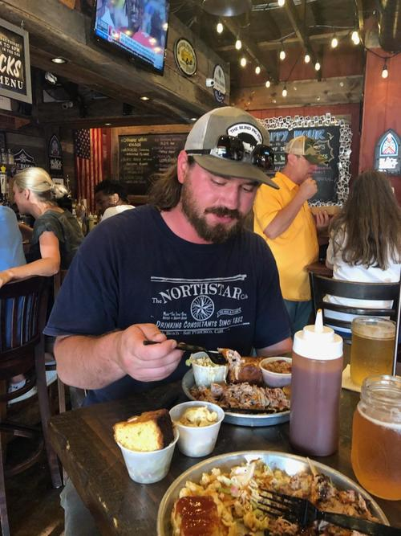
Then we walked around a bit, and saw one of those little spots where people line up to take Instagram pics. I wasn't about it, but she managed to capture me in front of it.
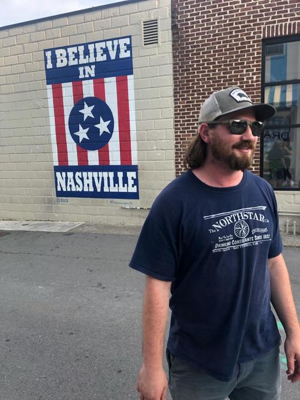
After that, I swung her by the airport, and she gave me the keys to her apartment. Not bad for someone who'd known me for all of 5 days. Like I said earlier, Phish bonds form quickly and deeply.
It was now Friday night, and I figured I'd go downtown to the Broadway area and see what all the fuss was about. I'd heard mixed reviews. On the one hand, there were music venues left and right, full of aspiring singer songwriters. On the other hand, it was kind of country, and not really my style. On I guess both hands, Nashville is apparently being overrun with bachelorette parties, which could be good or bad.
I ended up passing out, after having spent most of the last 36 hours driving.
On Saturday, there was a show at a cool venue "off broadway" called Exit/In, that my phriend had suggested. I wanted to check out the venue, but I was also interested in the band, Roots of a Rebellion. They are apparently one of the top selling contemporary reggae acts.
As usual, I got there a little early to scope the place and meet the locals. After taking a lap around the whole place I was pleased to see they sold Montucky Cold Snacks. Beer in hand, I posted up for the first act.
This was an emcee with a full band around him. Kind of weird, but I warmed up to it. They played well, and the guy could rap. He did an emotional song about losing a friend to overdose, which really hit home. I talked with him and his guitarist a bit afterwards and thanked him.
Next up was a local guy who had apparently played with the Roots of Rebellion for a long time, and he was stoked to be opening for them with his own band. That was more rock and reggae than the previous band, and I dug it. A lot of the people in the crowd I'd talked to were actually there to see him.
Finally, the main act came on. I was blown away. These guys were billed as a reggae band, and they absolutely played reggae, but they were a true jam band with a psychedelic light show and everything. They also departed from reggae into the realms of psych rock and metal at times. All-in-all, I really enjoyed the show.
The next day, I wanted to fish. My plan was to stick around for a Grateful Dead night at one of the big venues right on Broadway on Monday, so I had a lazy Sunday. I made a trip to Bass Pro Shops on my way to Piercy Priest Lake to pick up some waiters. I ended up with waiters, a new shirt and shorts, a new rod and reel, and a bunch of plastics. I know better than to grocery shop hungry, but I still haven't figured out how to show restraint in Bass Pro.
After Bass Pro, I swung by the Grand Ole Opry, because it was right there. I noticed the speed limit was 24 mph. I always liked that number in sports, so I didn't think much of it at first, before I realized it's usually 25 mph.
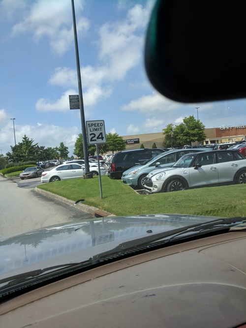
Next, I headed over to Piercy Priest. I had done some research, and I knew there was good striper and hybrid fishing if you had a boat and knew what you were doing. I didn't feel like renting a boat, and I didn't know what I was doing, so I stuck to shore fishing at the access points around the northern end of the lake. I tried the dam first, but it was hot and sunny and nothing was biting. Then I found a nice little area down the road where the water flowed in to a pond off the main lake. The fishing wasn't great, but I ended up having a ton of fun playing around with my new light power rod and a fluke. No one else got bit either. After dark, I headed back and went to bed.
On Monday, I wanted to get hot chicken, apparently one of the signature Nashville fares. I also wanted to see East Nashville. Multiple people, usually the ones who told me I wouldn't like Broadway, had said to go over there. So, I went to the original Bolton's over there. I ordered wings with the maximum level of heat. I could barely tolerate it. It was up there with some of my hottest chilis. And I loved it.
After that, I headed to 3 Crow Bar, apparently a classic East Nashville dive. At around 5pm on a Monday, it wasn't crowded at all. I really like the vibe. They were playing classic rock music videos and letting people smoke inside. After a couple hours there, I headed back to Broadway for this Grateful Dead show.
The band was called Stolen Faces, and they were good. It was at a place called ACME Feed and Seed, which I had heard can get packed full of yuppies. But for Grateful Dead night, it was quite pleasant. I got a spot at a high top right in front of the band and had a grand old time.
After that, I decided to wander and check out this Broadway thing. Sure enough, everywhere I turned there was a bar with a band playing. I found myself in the upstairs of a place alone with the band. I was calling out for them to play Sneakin' Sally, and the frontman laughed and came down to talk. I bought him a drink, and we started drinking together. That is a whole other story, for another time.
I've ended up staying in Nashville all week, and finished major milestones in a couple projects, but I'm ready to get out of here. Once I hit the road again, I think I'm going to see friends in Atlanta and Dallas, then swing up through New Mexico and settle in the Denver area for the rest of the summer.